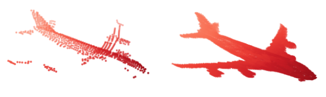

|
|
We present STaR, a novel method that performs Self-supervised Tracking and Reconstruction of dynamic scenes with rigid motion from multi-view RGB videos without any manual annotation. Recent work has shown that neural networks are surprisingly effective at the task of compressing many views of a scene into a learned function which maps from a viewing ray to an observed radiance value via volume rendering. Unfortunately, these methods lose all their predictive power once any object in the scene has moved. In this work, we explicitly model rigid motion of objects in the context of neural representations of radiance fields. We show that without any additional human specified supervision, we can reconstruct a dynamic scene with a single rigid object in motion by simultaneously decomposing it into its two constituent parts and encoding each with its own neural representation. We achieve this by jointly optimizing the parameters of two neural radiance fields and a set of rigid poses which align the two fields at each frame. On both synthetic and real world datasets, we demonstrate that our method can render photorealistic novel views, where novelty is measured on both spatial and temporal axes. Our factored representation furthermore enables animation of unseen object motion.
@article{yuan2021star,
title={STaR: Self-supervised Tracking and Reconstruction of Rigid Objects in Motion with Neural Rendering},
author={Yuan, Wentao and Lv, Zhaoyang and Schmidt, Tanner and Lovegrove, Steven},
journal={arXiv preprint arXiv:2101.01602},
year={2021}
}
|

|
|
Point cloud registration is a fundamental problem in 3D computer vision, graphics and robotics. For the last few decades, existing registration algorithms have struggled in situations with large transformations, noise, and time constraints. In this paper, we introduce Deep Gaussian Mixture Registration (DeepGMR), the first learning-based registration method that explicitly leverages a probabilistic registration paradigm by formulating registration as the minimization of KL-divergence between two probability distributions modeled as mixtures of Gaussians. We design a neural network that extracts pose-invariant correspondences between raw point clouds and Gaussian Mixture Model (GMM) parameters and two differentiable compute blocks that recover the optimal transformation from matched GMM parameters. This construction allows the network learn an SE(3)-invariant feature space, producing a global registration method that is real-time, generalizable, and robust to noise. Across synthetic and real-world data, our proposed method shows favorable performance when compared with state-of-the-art geometry-based and learning-based registration methods.
@article{yuan2020deepgmr,
title={DeepGMR: Learning Latent Gaussian Mixture Models for Registration},
author={Yuan, Wentao and Eckart, Benjamin and Kim, Kihwan and Jampani, Varun and Fox, Dieter and Kautz, Jan},
journal={arXiv preprint arXiv:2008.09088},
year={2020}
}
|

|
|
3D point cloud is an efficient and flexible representation of 3D structures. Recently, neural networks operating on point clouds have shown superior performance on 3D understanding tasks such as shape classification and part segmentation. However, performance on such tasks is evaluated on complete shapes aligned in a canonical frame, while real world 3D data are partial and unaligned. A key challenge in learning from partial, unaligned point cloud data is to learn features that are invariant or equivariant with respect to geometric transformations. To address this challenge, we propose the Iterative Transformer Network (IT-Net), a network module that canonicalizes the pose of a partial object with a series of 3D rigid transformations predicted in an iterative fashion. We demonstrate the efficacy of IT-Net as an anytime pose estimator from partial point clouds without using complete object models. Further, we show that IT-Net achieves superior performance over alternative 3D transformer networks on various tasks, such as partial shape classification and object part segmentation.
@article{yuan2018iterative,
title={Iterative Transformer Network for 3D Point Cloud},
author={Yuan, Wentao and Held, David and Mertz, Christoph and Hebert, Martial},
journal={arXiv preprint arXiv:1811.11209},
year={2018}
}
|

|
 |
Shape completion, the problem of estimating the complete geometry of objects from partial observations, lies at the core of many vision and robotics applications. In this work, we propose Point Completion Network (PCN), a novel learning-based approach for shape completion. Unlike existing shape completion methods, PCN directly operates on raw point clouds without any structural assumption (e.g. symmetry) or annotation (e.g. semantic class) about the underlying shape. It features a decoder design that enables the generation of fine-grained completions while maintaining a small number of parameters. Our experiments show that PCN produces dense, complete point clouds with realistic structures in the missing regions on inputs with various levels of incompleteness and noise, including cars from LiDAR scans in the KITTI dataset.
@inproceedings{yuan2018pcn,
title={PCN: Point Completion Network},
author={Yuan, Wentao and Khot, Tejas and Held, David and Mertz, Christoph and Hebert, Martial},
booktitle={2018 International Conference on 3D Vision (3DV)},
pages={728--737},
year={2018},
organization={IEEE}
}
|
|
|
This paper presents an autonomous robot system that is designed to autonomously search for and geo-localize potential underwater archaeological sites. The system, based on Autonomous Underwater Vehicles, invokes a multi-step pipeline. First, the AUV constructs a high altitude scan over a large area to collect low-resolution side scan sonar data. Second, image processing software is employed to automatically detect and identify potential sites of interest. Third, a ranking algorithm assigns importance scores to each site. Fourth, an AUV path planner is used to plan a time-limited path that visits sites with a high importance at a low altitude to acquire high-resolution sonar data. Last, the AUV is deployed to follow this path. This system was implemented and evaluated during an archaeological survey located along the coast of Malta. These experiments demonstrated that the system is able to identify valuable archaeological sites accurately and efficiently in a large previously unsurveyed area. Also, the planned missions led to the discovery of a historical plane wreck whose location was previously unknown.
@inproceedings{rutledge2018intelligent,
title={Intelligent Shipwreck Search Using Autonomous Underwater Vehicles},
author={Rutledge, Jeffrey and Yuan, Wentao and Wu, Jane and Freed, Sam and Lewis, Amy and Wood, Zo{\"e} and Gambin, Timmy and Clark, Christopher},
booktitle={2018 IEEE International Conference on Robotics and Automation (ICRA)},
pages={1--8},
year={2018},
organization={IEEE}
}
|

|
We explore a new way of converting point clouds to a representation suitable for deep learning, without destroying any geometric information. Specifically, we connect neighbouring points in a point cloud to form an undirected graph. Although graphs lack the translational-invariant structure just as point clouds, there has been a line of work that extends CNNs to graphs by defining convolution in the spectral domain. The aim of this project is to investigate the effectiveness of these spectral CNNs on the task of point cloud semantic segmentation. |
Localization, the problem of estimating the location of the robot given a map and a sequence of observations, is a fundamental problems in mobile robotics. Most traditional localization methods are passive, i.e. the robot does not have the ability to adjust its action based on its observations. The recently proposed active neural localization algorighm combines deep neural networks with Bayes filter to perform efficient active localization. In this project, we seek to extend active neural localization in noisy environments, where Gaussian noises are added to both the position and the observation of the agent. A series of experiments show that our active localization method outperforms passive localization methods in both noiseless and noisy environments. |


- 2020.6 - 2020.9: Research Intern, Facebook Reality Labs, Redmond
- 2019.9 - present: Graduate Research Assistant, University of washington
- 2019.6 - 2019.9: Research Intern, NVIDIA, Santa Clara
- 2017.9 - 2019.5: Graduate Research Assistant, Carnegie Mellon University
- 2017.5 - 2017.8: Undergraduate Research Assistant, Harvey Mudd College
- 2016.5 - 2016.8: Software Engineering Intern, Google, New York
- 2015.5 - 2015.8: Engineering Practicum Intern, Google, Kirkland